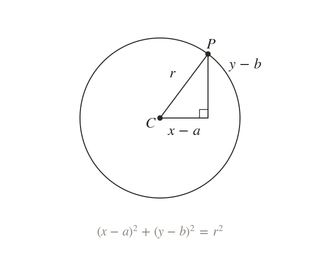
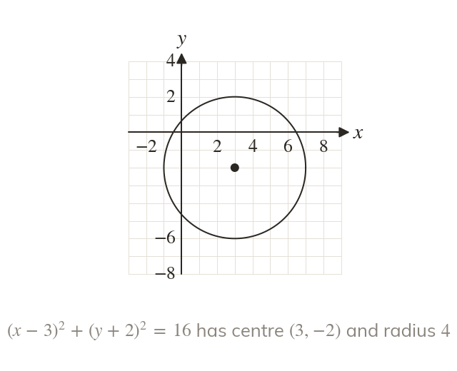
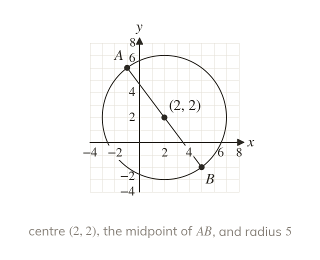
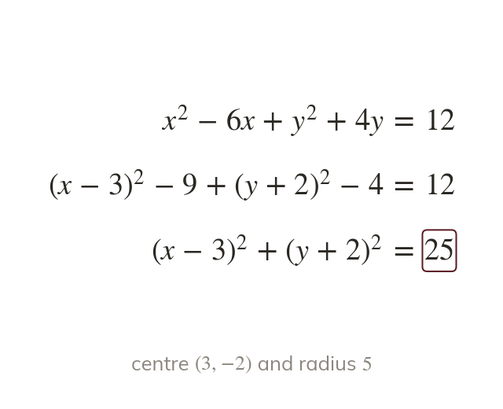
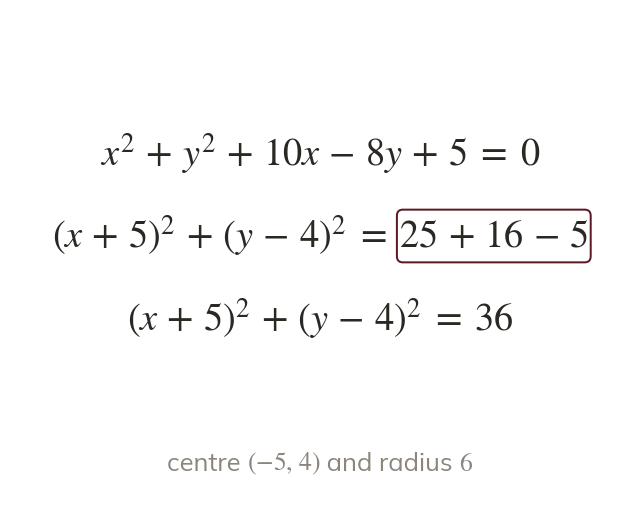
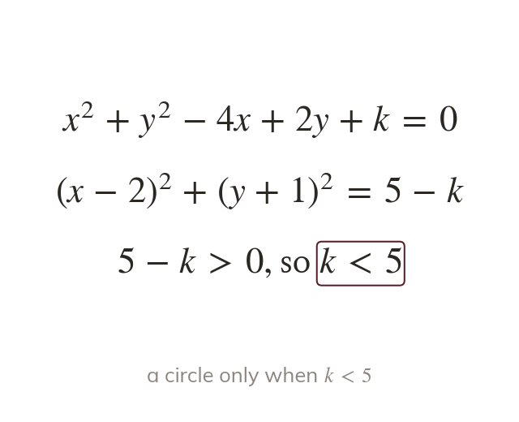

Pythagoras
A point on the circle is from the centre Its horizontal and vertical distances from the centre give
A circle is every point at one distance from its centre, so Pythagoras gives its equation. The next lesson finds where a straight line meets a circle.
Work down the page at your own pace. Write every answer in your book first, then click to check it.
Read each card, then follow the worked examples one step at a time.

A point on the circle is from the centre Its horizontal and vertical distances from the centre give

The centre is the point that makes each bracket zero, so the signs change. The right-hand side is so square-root it for the radius.

The centre is the midpoint of the diameter. The radius is the distance from the centre to either end.
Pick an answer. If it's wrong, the feedback tells you which mistake it was.
Write the blanks in your book first, then tap each one to check.
Read each card, then follow the worked examples one step at a time.

An equation such as is a circle written out. Complete the square in and in to read its centre and radius.

Halve the coefficients of x and y and change their signs to get the centre. Add the squared halves to the constant on the right.

An equation of this kind is a circle only if
With an unknown constant, this gives an inequality.
Pick an answer. If it's wrong, the feedback tells you which mistake it was.
Write the blanks in your book first, then tap each one to check.
Finished? Next lesson: 6.3 Intersections of Straight Lines and Circles.
For each skill, tap the one that is true for you today. Your Revise pages start with anything you mark Not yet.
Your ratings are saved on this device only.
Log in, then search for a code to practise that skill.